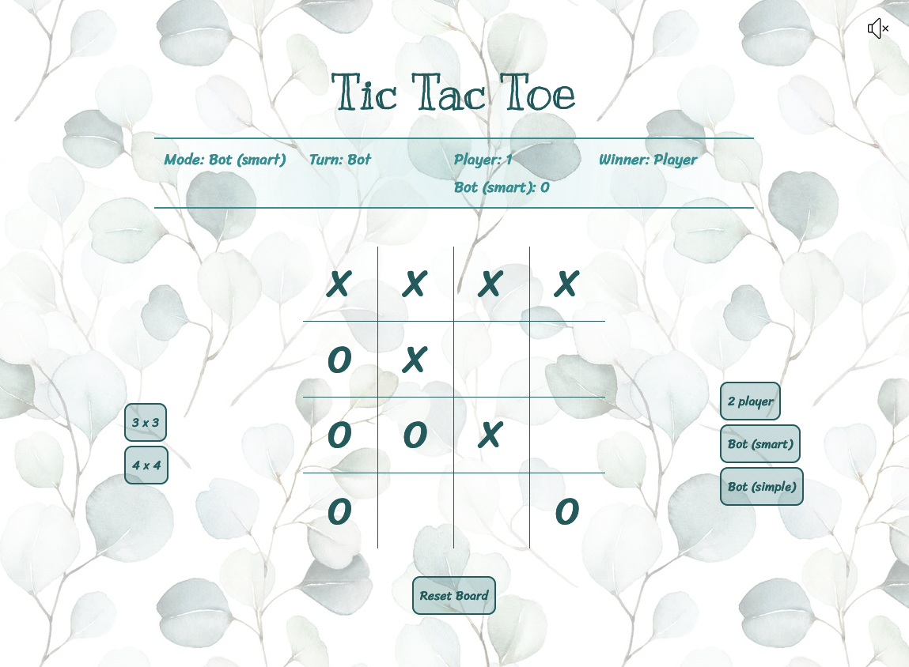
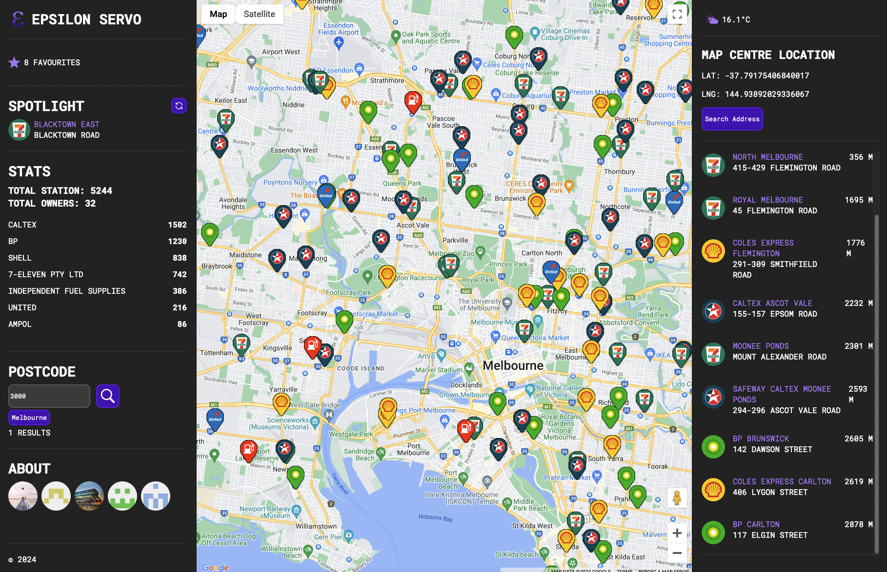

Bernadine Dao
Portfolio

Professional Summary
As a transitioning software engineer with a background in medicine, I bring a unique blend of technical and analytical skills.
I am experienced in effective communication, collaboration, and critical reasoning – and I am eager to leverage my skills in full stack development to deliver innovative and scalable software solutions.
Skills
- JavaScript
- HTML
- CSS
- Node.js
- Express.js
- Python
- Flask
- Trello
- Figma
- Vite
- C
- PostgreSQL
- SQLite
- Git
- GitHub
- Visual Studio Code
- Jest
- Render
- React
Strengths
- Analytical and design skills
- Effective communication of complex concepts
- Attention to detail
- Cross-functional collaboration
- Ownership and accountability for delivery of high-quality code
Education
Software Engineering Bootcamp
General Assembly | Apr 2024 - Jul 2024
CS50
Harvard University | Nov 2023 - Feb 2024
Bachelor of Medical Science (Hons)
Monash University & Oxford University (UK) | Mar 2017 - Nov 2017
Bachelor of Medicine & Bachelor of Surgery (Hons)
Monash University | Mar 2014 - Nov 2019
Experience
Software Engineering Bootcamp Student
General Assembly | Melbourne, VIC | Apr 2024 - Jun 2024
- Developed multiple full stack web applications incorporating RESTful APIs, browser rendering within MPA/SPAs, and database management.
- Worked autonomously, as well as in collaboration with software engineers, to design, develop, and deploy rich, robust full-stack web applications
- Applied cutting-edge frameworks and technologies to create thoughtfully designed, scalable software solutions.
Medical Doctor
Eastern Health / Western Health / Austin Health / Bendigo Health | Melbourne, VIC | Feb 2020 - May 2024
- Worked as a doctor in various public hospitals in Melbourne (VIC) for over 4 years.
- Collaborated with cross-functional teams, ensuring effective communication and clinical leadership in fast-paced environments
- Applied analytical and diagnostic skills to solve complex problems under high-stakes conditions.
Projects
Garden Planner
- Originally my Final Project for the CS50 course.
- Developed an online yearly garden planner, with CRUD functionality for custom plants and gardens.
- Integrated a weather API, which can display the weather at user-inputted coordinates.
- Incorporated a robust SQLite database to track plant and garden information, which I converted to PostgreSQL for deployment on Render.
Technologies
Python | Flask | PostgreSQL | HTML | CSS | Javascript | Render
GitHub
https://github.com/berternie9/garden-plannerYouTube Demo
ScribeSpace
- A project that I built as part of the General Assembly Software Engineering course.
- Developed an online reading companion and implemented CRUD features (e.g. adding new books, notes, reviews and vocabulary).
- Ensured industry benchmark features for user authentication, sessions, and routing conventions using a REST API.
Technologies
Node | Express | PostgreSQL | HTML | CSS | Javascript | Render
GitHub
https://github.com/berternie9/scribespaceYouTube Demo
Tic Tac Toe
- A project that I built as part of the General Assembly Software Engineering course.
- Built a web application for playing tic tac toe; either 2-player, or against a bot.
- Incorporated 'finite state machine' and 'expert system AI' concepts into bot logic.
Technologies
HTML | CSS | Javascript | GitHub Pages
GitHub
https://github.com/berternie9/tic-tac-toe
Deployed on GitHub Pages
https://berternie9.github.io/tic-tac-toe/
Screenshot
Epsilon Servo
- Collaborated with other software developers to build a full-stack single page application (SPA) for finding petrol stations, with a model view controller (MVC) framework.
- Leveraged version control (Git & GitHub), and maintained clear and concise communication across the group to coordinate pull requests and merges.
- Implemented multiple external and internal APIs, incl. Google Maps, Open Meteo, Geocoding & Reverse Geocoding.
Technologies
Node | Express | PostgreSQL | HTML | CSS | JavaScript | AJAX | Git | JSON | Trello | Figma
GitHub
https://github.com/berternie9/epsilon_servo
Screenshot
Fridge to Fork
- Created a full-stack single page application for finding recipes by ingredients / cuisine / diet, integrating an external API and an internal REST API.
Technologies
Node | Express | React | React-Router | Vite | PostgreSQL | HTML | CSS | JavaScript | Material UI | Render | Figma | Miro | AWS - S3, CloudFront, RDS, Lambda, API Gateway, EC2
GitHub
https://github.com/berternie9/fridge_to_fork